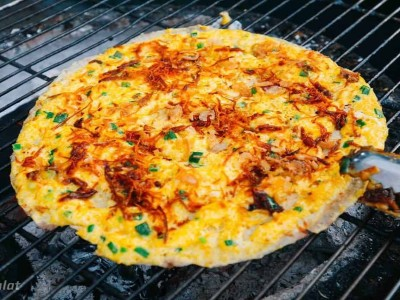

|  |
Food's name: Baked rice paper▸ Ingredients:
|
▸ Time to prepare: 30 minutes
▸ Approx quantity: 5 baked rice paper
▸ Detailed recipe:
Step 1: Prepare ingredients:
- Pickled scallions, wash with water, then finely chop, boil oil and pour in.
- Red onion peeled, thinly sliced, and fried until fragrant.
- Group the coals so that the coals burn just enough.
Step 2: Bake the rice paper:
- Put rice paper on the griddle, put a tablespoon of onion fat, a tablespoon
of satay, a teaspoon of fish sauce, spread the cake evenly.
- Bake briefly until the cake is dry, the edge of the cake is slightly curved,
beat 2 quail eggs on the surface of the cake, use a spoon to beat and spread the eggs.
- When the egg is slightly dry, continue to dry the shrimp and onion.
- Sprinkle chili sauce and mayonnaise on the cake.
Step 3: Done:
- The finished product is a piece of rice paper with a crispy base, a hot and fatty filling,
and an eye-catching and attractive color.
=> Try it and enjoy it now...
▸ Calories and related information: